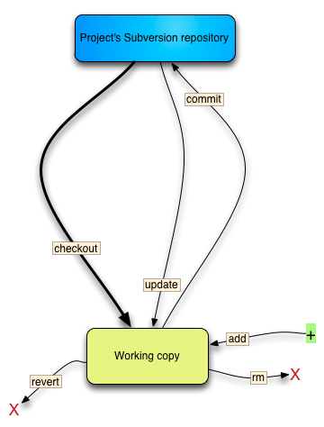
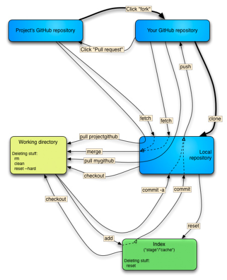

git 简介#
https://git-scm.com/book/zh/v2
http://blog.jobbole.com/tag/pro-git/
http://backlogtool.com/git-guide/cn/
https://www.zhihu.com/question/22932048
https://github.com/geeeeeeeeek/git-recipes/wiki/5.2-%E4%BB%A3%E7%A0%81%E5%9B%9E%E6%BB%9A%EF%BC%9AReset%E3%80%81Checkout%E3%80%81Revert%E7%9A%84%E9%80%89%E6%8B%A9
http://www.jianshu.com/p/43190d32bd4e
https://git-scm.com/blog/2010/03/02/undoing-merges.html
https://www.atlassian.com/git/tutorials/resetting-checking-out-and-reverting/summary
http://stackoverflow.com/questions/8358035/whats-the-difference-between-git-revert-checkout-and-reset
https://marklodato.github.io/visual-git-guide/index-zh-cn.html
git 与svn 区别#
svn属于集中化的版本控制系统:单一的集中管理的服务器，保存所有文件的修订版本，而协同工作的人们都通过客户端连到这台服务器，取出最新的文件或者提交更新.缺点是中央服务器的单点故障。就无法协同工作。 如果中心数据库所在的磁盘发生损坏，又没有做恰当备份，毫无疑问你将丢失所有数据——包括项目的整个变更历史
git属于分布式版本控制系统:客户端并不只提取最新版本的文件快照，而是把代码仓库完整地镜像下来。 这么一来，任何一处协同工作用的服务器发生故障，事后都可以用任何一个镜像出来的本地仓库恢复。 因为每一次的克隆操作，实际上都是一次对代码仓库的完整备份。
svn工作模型#

git工作模型#

repository#
仓库
the index#
暂存区
working tree#
工作目录
commit#
提交对象
branch#
分支
tag#
标签
master#
主分支
HEAD#
当前分支
Git命令练习#
https://try.github.io/levels/1/challenges/1
http://learngitbranching.js.org/